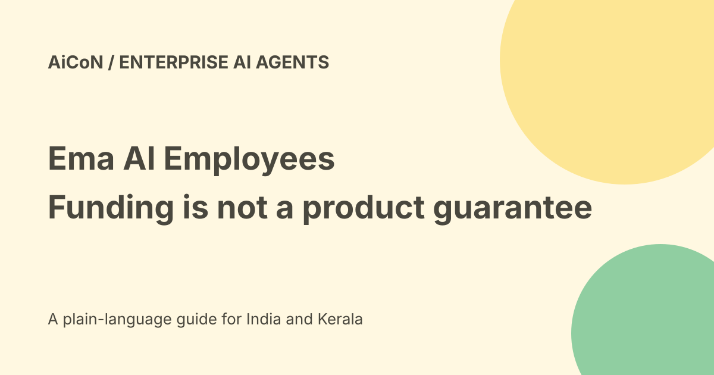

Ema AI Employees: funding, deployment and privacy checks
Ema announced a $77 million Series B on 23 September 2026, led by Creaegis with Accel, S32 and Prosus increasing investment. The company says total funding reached $140 million. Funding is not a free-product offer, a guarantee of quality or an investment recommendation.

What are AI Employees?
Ema uses that term for enterprise software that answers questions and runs workflows across areas such as HR, IT and finance. These are software agents, not human staff.
The platform describes a common entry point across Teams, Slack, voice and other channels, with prebuilt integrations and conversational setup. Actual deployment still needs permissions, data preparation and review.
Funding and expansion
The funding announcement says the round will support product work and expansion into APAC and EMEA. It says valuation more than quadrupled but does not supply an absolute valuation in the checked page.
Those are company statements. A named investor or regional expansion plan does not establish local hosting, an Indian tariff or access for every Indian business.
Customer figures are vendor claims
The announcement describes Wipro's assistant supporting more than 240,000 associates in 65 countries, over 100 workflows and about 2.9 million yearly employee queries.
It also reports a 20% employee-satisfaction increase and other performance figures. We did not audit those results or reproduce them. Different data, workflows and approval rules can produce different outcomes.
Builder and integrations
Ema's product page describes creating agents from plain-language intent and connecting existing business systems. Its homepage lists more than 250 prebuilt integrations and describes EmaFusion combining more than 100 models.
Neither a connector count nor a model count establishes which systems are enabled or where data is processed in your contract. Confirm exact connectors, processing and permissions before supplying employee records.
Single tenant is not necessarily the default
The marketing security page promotes single-tenant and customer-cloud deployment options. The more detailed Builder security documentation says multi-tenant is the default and single-tenant is optional.
That distinction matters. Multi-tenant uses logical separation; optional single-tenant provides dedicated components. Ask which architecture your proposal includes instead of treating a marketing option as the standard setup.
Retention and backups
Builder documentation says customer data is retained as needed to provide service or as set in the data-processing agreement. It also says backups are retained for 365 days by default, configurable for single-tenant customers.
A deletion request and immediate removal from every backup are not automatically the same thing. Obtain the actual retention and deletion commitments, including indexes, logs and recovery copies.
Security statements need scope
Ema lists certifications and describes encryption, redaction and controls against threats. Its security page says customer data is not used to train other models.
Those are vendor statements, not an independent certification audit performed here. Obtain current reports, dates, scope and contractual terms. Compliance branding does not prove every workflow or data transfer meets your organisation's obligations.
Pricing and free verdict
The homepage describes outcome-based pricing, but no final public tariff or free self-service allowance was established in the checked sources.
Ask for the exact outcomes billed, minimum commitment, integration and implementation costs, usage limits, support, renewal and exit terms. No sales enquiry, demo request, account connection or contract was made here.
A controlled enterprise pilot
- Choose one narrow workflow and measurable success condition.
- Use approved test data.
- Confirm tenant type and data-processing locations.
- Start with read-only connectors.
- Review identity and role permissions.
- Define human handoff and approval rules.
- Test missing data, conflicts and misleading documents.
- Measure errors, cost and review time.
- Check logs, rollback, retention and export.
- Approve a scoped production plan only after the pilot.
Keep consequential actions separate
An HR or finance assistant can encounter payroll, health and identity information. It should not change bank details, disclose records or commit spending merely because a document asks it to.
Keep source checks and human approval for consequential changes. A friendly answer is not evidence that the record is correct or the action is authorised.
What changed since the original post?
We retain the primary funding figures but separate them from product guarantees. Detailed docs add the optional single-tenant distinction and default backup retention, while final India pricing and data location remain unresolved.
Frequently asked questions
Does funding make Ema free to try?
No verified public free tier was established.
Is every deployment single-tenant?
No. Detailed docs say multi-tenant default, single-tenant optional.
Were customer results independently checked?
No. They are attributed vendor claims.
Sources: Official funding announcement · Official product overview · Marketing security page · Detailed Builder security documentation. Checked 7 October 2026.